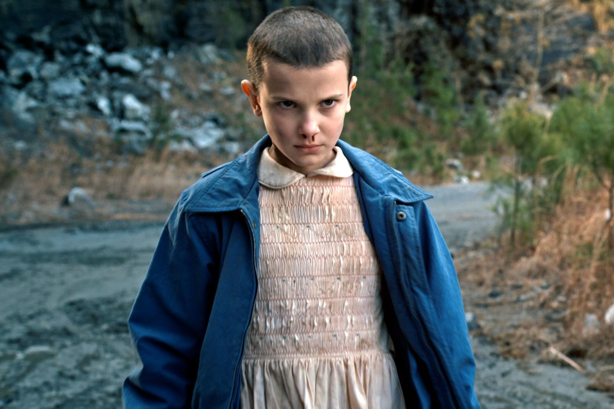
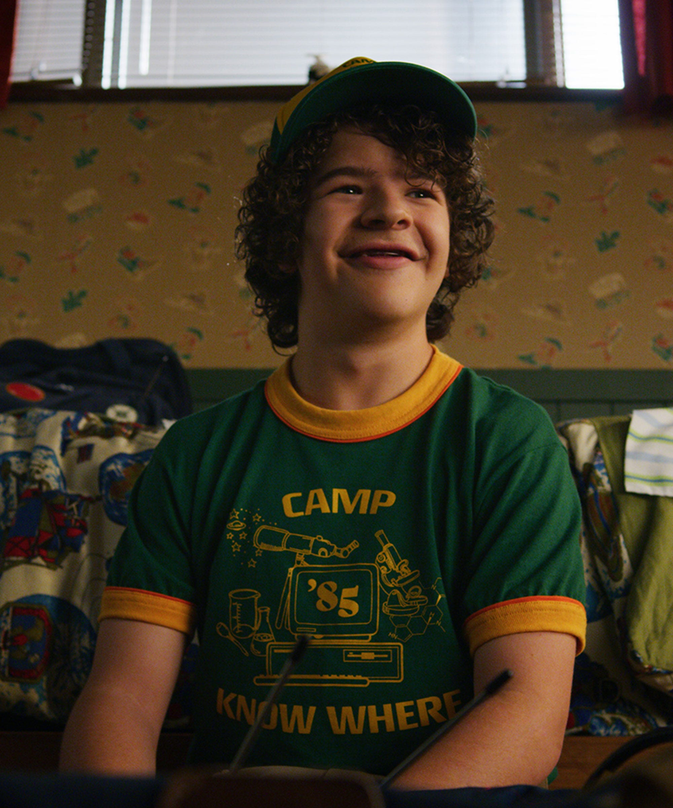
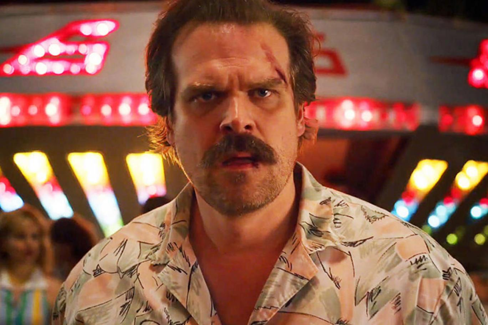

Ana Karakterler

Eleven (Onbir)
Telekinezi ve telepatik güçlere sahip, gizemli geçmişi olan genç kız.

Dustin Henderson
Grubun en esprili ve zeki üyesi, bilim ve macera tutkunu.

Jim Hopper
Hawkins Şerifi ve Eleven'a babalık yapan eski polis memuru. Gizemleri çözmekteki en önemli yetişkindir.